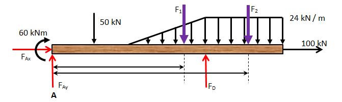
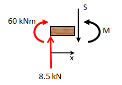
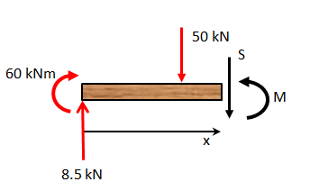
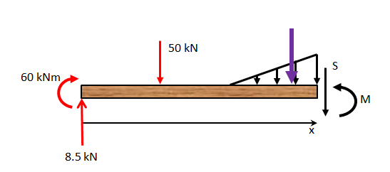
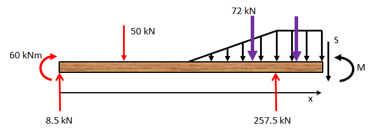
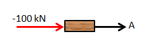
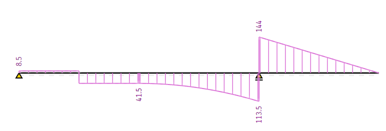
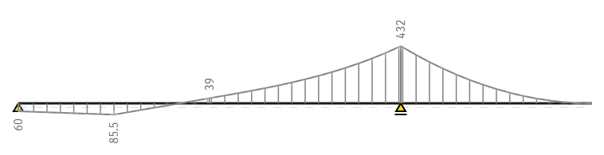
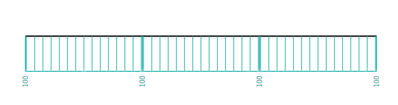

Please complete following practice question to enhance what you learnt from the lecture.
You can also play with the interactive BMD module, which is an example of two point loads acting on simply supported beam.
Practice Question
Please calculate the internal forces of the beam shown below, and plot the AFD, SFD and BMD.

Reaction Type
Support A is
. So it has
reactions.
Support D is
. So it has
reactions.
Calculate Reactions (press ENTER after input)
Substitute the support with the reaction forces FAx, FAy and FD. The free-body-diagram is shown as:

Where the reaction forces are drawn in red.
The resultant of the linear distributed load from B to D is shown as F1; The resultant of the uniformly distributed load from D to E is shown as F2
Thus we have F1 = kN
The distance between F1 and point A is m.
Thus we have F2 = kN
The distance between F2 and point A is m.
Using ΣMA = 0, we have: 60 + 50 × 3 + F1 × + F2 × = FD × 12
Thus FD = kN
Using ΣFy = 0, we have: 50 + F1 + F2 = FAy + FD
Thus FAy = kN
Using ΣFx = 0, we have: 100 + FAx = 0
Thus FAx = kN
Shear force and Bending moment in segment AB

Assume the x axis start from point A to the right.
In segement AB, e.g. 0 ≤ x ≤ 3 m
Shear force S = FAx =
Bending moment M = 60
8.5x
Shear force and Bending moment in segment BC

In segement BC, e.g. 3 m ≤ x ≤ 6 m
Shear force S = FAx - 50 =
Bending moment M = 60 + 8.5x
50(x-3)
Shear force and Bending moment in segment CD

In segement CD, e.g. 6 m ≤ x ≤ 12 m
From point C to x, there is a linear distributed load. Its resultant's magnitude (in kN) is
• (x-6)2
Its distance from point A is 6 +
• (x-6)
Shear force S = FAx - 50 -
• (x-6)2
Bending moment M = 60 + 8.5x - 50(x-3) -
• (x-6)2 •
• (x-6)
Note in this segment, S is a parabola, M is a cubic curve
Shear force and Bending moment in segment DE

In segement DE, e.g. 6 m ≤ x ≤ 12 m
From point D to x, there is a uniform distributed load. Its resultant's magnitude (in kN) is
• (x-12)
Its distance from point A is 12 +
• (x-12)
Shear force S = FAx - 50 - 72 -
• (x-12)
Bending moment M = 60 + 8.5x - 50(x-3) - 72(x-10) -
• (x-12) •
• (x-12)
Note in this segment, S is linear, M is a parabora
Axial force

Along the beam, the Aixal force satisifies: A + FAx = 0.
So A = kN
The SFD, BMD and AFD is shown as:
SFD:

BMD:

AFD:

Interactive BMD
A simply supported beam of length 3m has two point loads (both 12 kN) acting on it. Move the sliders to change the location of the forces, and see how the BMD changes.
Distance from P1 to left (0 - 3m)
1 mDistance from P2 to left (0 - 3m)
2 m